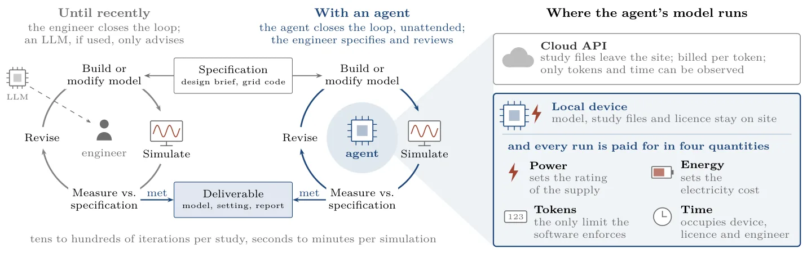
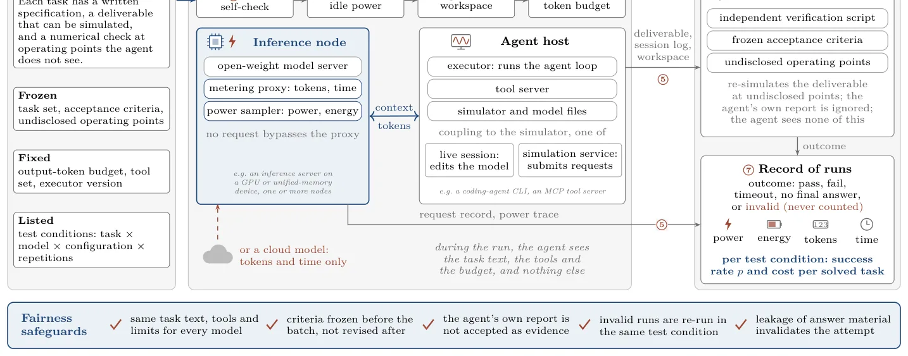
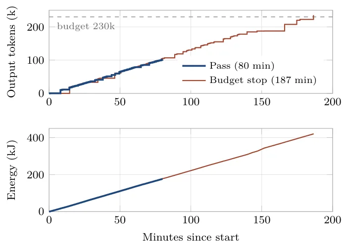
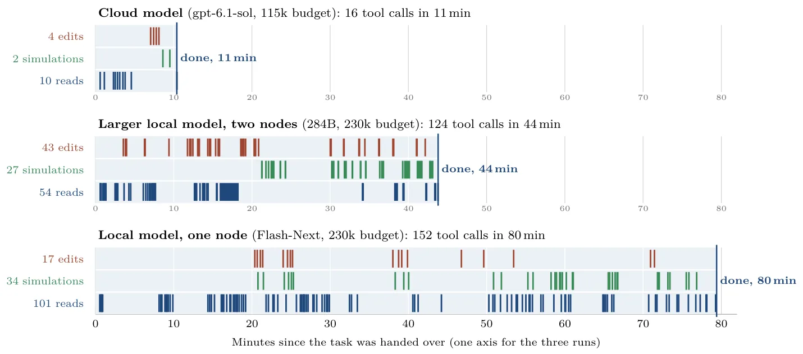

O Problema da Simulação Iterativa
A eletrônica de potência é um campo onde o hardware físico é central, mas o desenvolvimento depende massivamente de simulação. Engenheiros projetam conversores ou estudam redes elétricas através de um loop iterativo: modela-se o circuito, simula-se, medem-se os resultados contra as especificações e revisa-se o modelo. Esse ciclo se repete até que a especificação seja atendida ou se prove que é inviável.
Historicamente, esse loop era fechado manualmente. O engenheiro executava o simulador, inspecionava as formas de onda e decidia a próxima modificação. Modelos de linguagem (LLMs) podiam atuar como consultores, mas ficavam de fora do loop de controle. A chegada dos agentes de IA, construídos sobre LLMs, mudou isso. O agente chama ferramentas, lê os resultados e determina a próxima ação, fechando o loop automaticamente.
A escolha entre hospedar esse agente na nuvem ou localmente é crítica. Para organizações que lidam com projetos sensíveis, dados de clientes ou material controlado por exportação, a implantação local é frequentemente a única opção. Além disso, os simuladores podem ter licenças restritas ao uso on-premises. No entanto, um agente local transforma-se em uma carga elétrica real sobre o equipamento da organização.

A Lacuna na Pesquisa Atual
A maioria dos trabalhos existentes foca no que os agentes podem alcançar quando hospedados em APIs na nuvem. Há pouca investigação quantitativa sobre o custo de uma implantação local em tarefas reais de simulação. Quando um agente roda localmente, cada execução consome energia, gera tokens e ocupa tempo de parede (wall-clock time). Esses recursos têm custos diretos e indiretos.
Para avaliar a viabilidade, quatro quantidades devem ser medidas em suas próprias unidades: 1) a potência consumida pelo dispositivo de inferência, que define a necessidade de fonte de alimentação; 2) a energia consumida até o fim da tarefa, que determina o custo de eletricidade; 3) o número de tokens gerados, já que o orçamento de tokens é o limite imposto pelo software do agente; e 4) o tempo de parede, durante o qual a licença do simulador e a espera do engenheiro estão ocupadas.
Os autores, do ELITEGrid Research Laboratory da Universidade de Alberta, propõem um framework de avaliação sistemática. O objetivo é caracterizar a fronteira de capacidade de um agente local nessas tarefas e o custo por tarefa resolvida, fornecendo insights práticos para o uso de IA agêntica em eletrônica de potência.
Metodologia: O Framework de Medição
O paper apresenta um framework rigoroso para garantir comparações justas. Antes de cada lote de testes, os conjuntos de tarefas, os critérios de aceitação e os pontos de operação não divulgados são congelados. O orçamento de tokens de saída, o conjunto de ferramentas e a versão do executor são fixados. Isso elimina variáveis ocultas que poderiam enviesar os resultados.
Cada execução ocorre em uma plataforma específica, onde são coletados dados de energia e tempo. A abordagem mede não apenas se o agente resolveu o problema, mas quanto ele custou para resolvê-lo. Isso inclui medir a potência drawn (consumida) pelo dispositivo de inferência e a energia acumulada ao longo do tempo.
O framework permite analisar trade-offs entre diferentes configurações. Por exemplo, é possível comparar o desempenho de um modelo base versus um modelo de raciocínio, ou avaliar o impacto de diferentes orçamentos de tokens. A ideia é tratar a configuração do agente como um todo, onde hardware, modelo e parâmetros de software interagem para definir o resultado final.

Resultados: Custo por Tarefa Resolvida
Os resultados mostram que o custo de uma tarefa resolvida não é uma propriedade intrínseca do modelo, mas sim da configuração completa. Fatores como o orçamento de tokens de saída e a habilitação de raciocínio (reasoning) mudaram drasticamente as taxas de sucesso. Por exemplo, apenas aumentar o orçamento de tokens mudou o resultado de construção de 1/48 para 32/62 em certas tarefas.
Habilitar o raciocínio aumentou a taxa de sucesso de um modelo em uma família específica de 17% para 67%. Dentro de uma mesma família de modelos, o tamanho do modelo base alterou a taxa de sucesso de 83% para 57% e quadruplicou a energia por tarefa resolvida. Isso indica que modelos maiores não são sempre melhores; eles podem ser mais caros e menos eficazes em certos contextos de simulação.
No lado do hardware, o bloqueio do clock (clock locking) alterou o consumo de energia em 66% sem mudar o tempo de parede. Isso destaca que a eficiência energética depende de detalhes de implementação e configuração do hardware, não apenas da arquitetura do modelo.

Implicações para Implantação Local
A implantação local é escolhida por soberania de dados e restrições de licença. A questão é: quais tarefas são adequadas para isso? O paper define um critério de viabilidade. Uma tarefa é viável localmente quando a probabilidade de sucesso (p) é alta o suficiente para que a energia, o tempo e os tokens de uma tarefa resolvida, escalados por (1-p)/p, sejam aceitáveis.
Nem um dispositivo mais rápido nem um modelo mais barato por execução mudam esse fator fundamental. No estudo, tarefas que começavam com um modelo existente atendiam ao critério. Isso inclui diagnosticar e reparar um modelo, realizar etapas de um design existente, ajustar controladores contra resultados simulados e estudos de sistemas de potência que retornam uma configuração ou número.
Em contraste, construir um modelo de conversor do zero a partir de uma especificação não atendeu ao critério com orçamentos menores de tokens. Com o dobro do orçamento, o custo saltava para horas por tarefa resolvida, comparado a minutos na nuvem. Isso sugere que a IA local é melhor para refinamento e diagnóstico do que para criação generativa complexa a partir do zero.

Onde Está o Custo e Como Reduzi-lo
Em escala de estudo, um agente local é uma carga elétrica pequena. O dispositivo consome dezenas de watts, e uma tarefa de defeito resolvida custa algumas dezenas de quilojoules. Portanto, a eletricidade é o menor item no modelo de custo para uso de engenharia. O próximo maior custo é o tempo de parede.
O tempo de parede é crítico porque ocupa a licença do simulador e a atenção do engenheiro. Um dispositivo que precisa ser mais rápido pode executar vários nós em paralelo ou usar um dispositivo com mais computação e largura de banda de memória. Nesse caso, o tempo por tarefa resolvida cai, mas o custo de infraestrutura sobe.
Para conjuntos de dados de sistemas de potência, ambas as implantações (local e nuvem) alcançaram os mesmos resultados onde ambas passaram. Os requisitos adicionais para a implantação local foram uma janela de contexto acima de 131k tokens e o esforço de manter as salvaguardas. O benefício é que o modelo, os arquivos de estudo e os transcripts permanecem no local.
Limitações e Trabalho Futuro
O paper reconhece limitações. O estudo foi realizado em um único dispositivo de inferência pequeno, escolhido como o mínimo necessário para o estudo, não como uma configuração de implantação ideal. Dispositivos maiores ou clusters poderiam mudar os números de tempo e energia, mas a relação fundamental entre sucesso e custo permaneceria.
A fronteira de viabilidade entre tarefas locais e de nuvem é uma propriedade do modelo, do orçamento e do dispositivo, e mudará à medida que a tecnologia evolui. No entanto, o critério de avaliação e a necessidade de medir p (probabilidade de sucesso) nas tarefas específicas da organização não mudarão.
Grupos de engenharia podem localizar esse limite para sua mistura de tarefas medindo p em um pequeno número de execuções em dois orçamentos diferentes. Isso permite uma decisão informada sobre quando usar IA local versus nuvem, baseada em dados reais de custo e desempenho, e não em suposições.
Conclusão
Este paper fornece uma avaliação quantitativa robusta de agentes de IA local em simulação de eletrônica de potência. Ele demonstra que, embora a nuvem seja mais rápida para tarefas complexas de criação do zero, a implantação local é viável e econômica para tarefas de diagnóstico, ajuste e análise de sistemas existentes.
Os principais insights são: 1) O custo é definido pela configuração, não apenas pelo modelo; 2) A eletricidade é um custo menor que o tempo; 3) Tarefas de refinamento são ideais para local; 4) A viabilidade depende da probabilidade de sucesso e do orçamento de tokens.
Para engenheiros e cientistas de dados, o trabalho oferece um framework prático para avaliar se a IA agêntica local vale a pena para suas aplicações específicas, considerando restrições de dados, custos de infraestrutura e necessidades de desempenho.
O que fica
- Agentes locais consomem energia e tempo reais; a nuvem não é a única opção viável para dados sensíveis.
- O sucesso depende da configuração, não apenas do modelo: orçamento de tokens e hardware importam mais.
- Tarefas de diagnóstico e ajuste são viáveis localmente; criação do zero pode ser proibitiva.
- A eletricidade é um custo menor que o tempo de espera e a licença do simulador.
Paper original: Local AI Agents in Power Electronics Simulation: Deployment, Measurements and Costs
Comentários
Nenhum comentário ainda. Seja o primeiro.